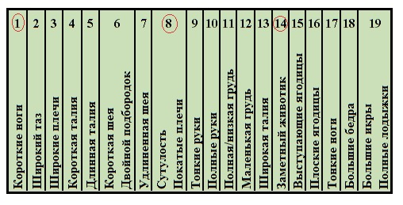
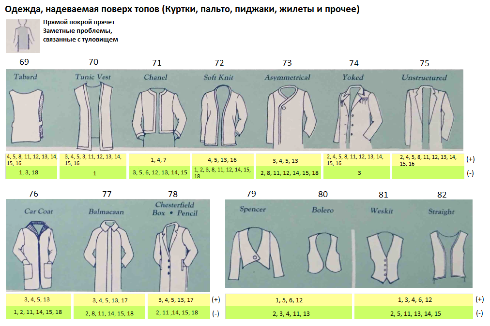
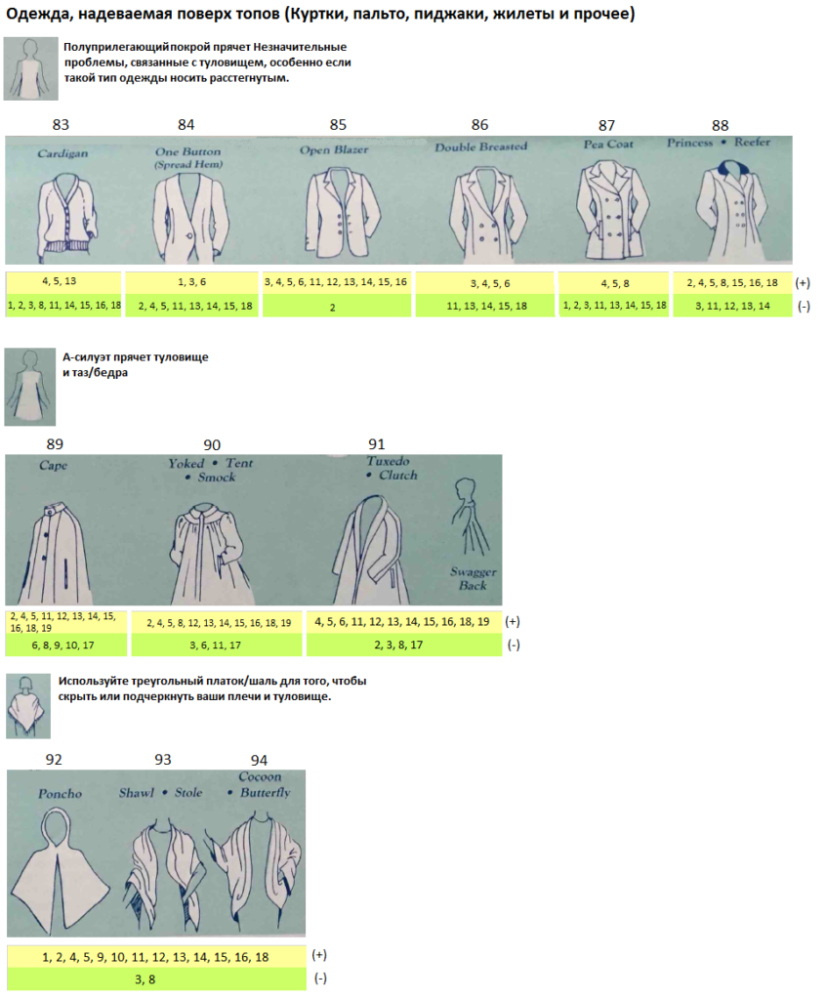
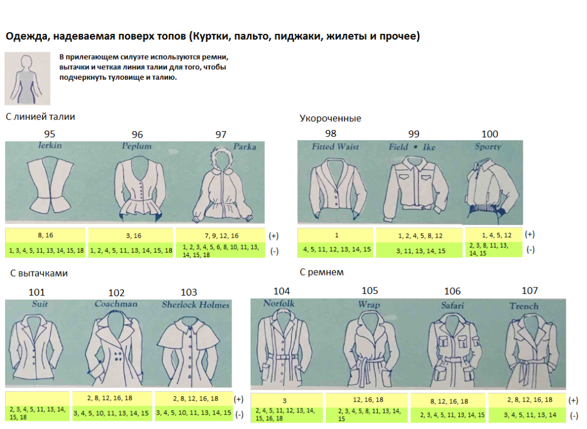

Начнем с терминологии, чтобы не путаться в понятиях:
Плечевая одежда (верх) - одежда, опирающаяся на верхнюю опорную поверхность тела, т.е. начинается с плеч, груди и идет вниз. Многообразие Плечевой одежды можно представить так (сюда входят блузки, свитера, жакеты, пальто и пр.):

Но по концептуальному применению верх мы можем поделить следующим образом:

- одежда, с которой начинается “многослойный торт”, или базовая одежда (футболки, рубашки);
- одежда, используемая в качестве дополнительного слоя для создания тепла или во время непогоды (зимняя, демисезонная одежда), иногда может выступать как единица творческого комплекта (жилет, например).
Конечно, мы можем и кучу футболок надеть друг на друга, но они не спасут ни от мороза, ни от дождя. Так же, как и пальто на голое тело (нижнее белье) вы вряд ли наденете, чтобы выйти в люди или в офис. (В “особом” настроении можно и не так одеться! Но встает вопрос: куда вы в этом идете и с какой целью?).
Поясная одежда (низ) - одежда, опирающаяся на нижнюю опорную поверхность тела, т.е. которая начинается с талии, бедер (таза) и идет вниз. Штаны, юбки, шорты и пр.

Платья и комбинезоны относятся к Плечевой одежде, но конструктивно это выглядит как ВЕРХ + НИЗ, т.к. здесь часто углядываются 2 опорные поверхности:

Сегодня мы рассмотрим Плечевую одежду (верх) и ее основные элементы (рукав, ворот, горловина, лацканы) и фасоны (силуэт).
Как использовать путеводитель
Следующие иллюстрации помогут вам проанализировать, как те или иные линии, дизайн в одежде будет работать на вашей фигуре. Но для этого нам понадобится уже заполненная табличка. В ней должны быть обведены цифры, соответствующие вашим Заметным особенностям. Примерно так:

Далее, скачиваете следующие картинки к себе на компьютер и используете Paint или можно просто распечатать на принтере - как вам удобно. На этих картинках вы обводите свои цифры, где только их найдете; так же не пропустите советы.
Обратите внимание, что под каждой картинкой есть две строки - поле (+) и поле (-). В некоторых случаях под одной и той же иллюстрацией может быть обведено много цифр как в одном поле, так и в разных полях (+) и (-). Пока не заморачивайтесь, что значат все эти плюсы и минусы, с результатами будем разбираться позже.
Если вдруг оказалось, что у вас наличествуют только Незначительные особенности (такое бывает), то вам есть чем гордиться, и это дополнительный повод для радости и улыбок. Только не обводите Незначительные особенности в изображениях**.** Все советы и подсказки для такого типа особенностей были даны в самом Тесте (в карточках), также далее будет дополнительная статья с теми же советами, но плюс картинки.
Погнали?
Вырез горловины, кокетка

Вырез горловины (Neckline)
Круглый вырез горловины (Round):
Высокий (High):
1 - круглый под горло
2 - с разрезом и с видимой или невидимой на разрезе застежкой
3 - с разрезом в виде замочной скважины (или капли)
Средний (Medium):
4 - как часть круга (достаточно широкий) (скуп)
5 - присборенный (не обязательно собранный на одну ленту)
Низкий (Low):
6 - как половина овала, виде буквы U
7 - оголяющий плечи

Диагональный (Diagonal):
8 - в виде буквы V
9 - декольтированный (глубокий и широкий)
10 - ассиметричный (греческий)
Прямой (Straight):
11 - квадратный (каре)
12 - лодочка (высокий или средний по глубине, широкий)
В виде сердца (Heart):
13 - в виде сердца с рукавами
14 - в виде сердца без лямок

Кокетка (Yoke):
Округлая (Curved):
15 - в виде нагрудника (слюнявчика)
16 - широкая круглая
Горизонтальная (Horizontal):
17 - квадратная со сборками
18 - квадратная без деталей (под горло)
В виде сердца (Heart):
19 - в западном стиле (вестерн-стайл)
Воротники, лацканы

Воротники (Collars):
Высокие (High):
20 - драпированный (много складок)
21 - воротник-стойка (китайский, казачий, неру)
22 - с оборками
23 - гольф (водолазка)
24 - как капюшон, только спереди (драпировка в виде одной складки)
25 - с завязками, бантом (аскот)
Открытые (Open):
26 - широкий квадратный
27 - широкий треугольный (морячок)
28 - рубашечный мягкий треугольный (поэт)
29 - округлый (каплевидный)
Закрытые (Closed):
30 - рубашечный округлый (Питер Пэн)
31 - рубашечный с острыми уголками

Лацканы (Lapels):
32 - зубчатые лацканы
33 - заостренные лацканы
34 - челси
35 - шалевидный (смокинг)
О том, как шейные аксессуары (банты, ожерелья, платки) могут превратить (-) в (+) мы поговорим попозже, когда коснемся темы аксессуаров.
При двойном подбородке (особенность 6): согласно Иллюзии ассимиляции рекомендуется избегать округлых линий рядом с лицом (высокие воротники имеют округлые основания, что подчеркнёт двойной подбородок).
При длинной шее (особенность 7): в случаях 26, 27, 29, 32-35 вы можете поколдовать над глубоким вырезом, добавив украшение под горло, или приподнимите воротники и лацканы сзади.
Рукава (Sleeves)

36 - классический рубашечный
37 - бишоп
38 - раструб (ангел)
39 - реглан
40 - долман (летучая мышь)
41 - кимоно
42 - с буфом (крестьянский, гибсон)
43 - с подплечниками
44 - с эполетами
45 - с отворотами
46 - манжеты
47 - американская пройма (сабрина)
48 - лепесток
49 - колокольчик
50 - баттерфляй

Длина рукава:
A - без рукавов
B - расширенный
C - короткий
D - 1/2
E - 3/4
F - длинный
G - с манжетой
Совет для обладателей особенностей 2 и 8: всегда используйте подплечники, где возможно. Совет для обладателей особенностей 9 и 10: избегайте прозрачных или обтягивающих рукавов.
Топы (базовый верх) (Tops)

Подчеркивание линии бюста и талии (Emphasizes bustline and waist):
51 - цилиндрической формы (туба)
52 - обрезной
53 - халтер (американская пройма с подчёркнутым лифом)
54 - майка
Подчеркивание талии и таза/бедер (Emphasizes waist and hips):
55 - корсетного типа с расширением в области таза/бедер
56 - в западном стиле (вестерн-стайл)
57 - туника/рубашка с поясом
Подчеркивание талии (Emphasizes waist):
58 - с запAхом
59 - короткие вязаные (трикотажные)

Прячет талию, подчеркивает таз/бедра (Hides waist, emphasizes hips):
60 - свитшот
61 - вязаный жилет
62 - морячка
63 - с кокеткой в области таза/бедер
64 - камисоль (на данном изображении не обтягивающая)
Прячет только талию, подчеркивает таз/бедра (Hides waist only):
65 - топ с прямоугольным силуэтом, чаще всего из держащей форму ткани (shell -
панцирь)
66 - блузон
Прячет талию и таз/бедра (Hides waist and hips):
67 - туника (казачья рубашка)
68 - длинная туника
Вечная классика:

Есть линии и стиль, которые подходят лишь одному типу фигуры. А есть такие линии и стили, которые хорошо садятся на разные типы фигур. Во втором случае мы говорим о классике. Независимо, что у нас сейчас в моде, классика всегда будет уместна и хороша. У блузки вверху к классическому стилю относятся длинные рукава с манжетами, зубчатый воротник и высокая кокетка со сборками.
Совет: одевайте (+) топы поверх (не заправляя) юбок и брюк со знаком (-).
Дополнительный слой (демисезонная, зимняя одежда и все, что надевается поверх топов) (Layers: Jackets, Coats)
 Жилеты (безрукавки) являются многовариантными предметами одежды: они выступают как дополнительный слой для тепла, или как гармоничное завершение аутфита (наряда), или используются как шутливые “нотки” во внешнем облике (те, кто любит поозорничать).
Прямой покрой (Straight):
69 - табард
70 - удлиненный жилет
71 - Шанель
72 - мягкая кофта
73 - с ассиметричной застежкой
74 - с кокеткой
75 - жакет мягкой формы (не подогнанный по фигуре, мало вытачек)
76 - пальто для водителей авто (каркот)
77 - балмакан (вид дождевика: свободного покроя, с воротником и рукавами -
реглан)
78 - честерфилд
79 - спенсер (что-то типа фрака, в данном варианте без фалды)
80 - болеро
81 - жилет с пуговицами
82 - жилет без пуговиц

Полуприлегающий силуэт (Semifitted):
83 - кардиган
84 - с одной пуговицей
85 - блейзер, который носится расстегнутым, или блейзер без застежек
86 - двубортное (открытая грудь)
87 - бушлат (закрытая грудь)
88 - пальто типа шинели (принцесса, рифер) (закрытая грудь)
А-силуэт (A-line):
89 - накидка (кейп)
90 - плащ-палатка
91 - трапециевидное пальто с шалевидными лацканами. Swagger (напыщенный) back -
сборки сзади на уровне лопаток
Треугольный покрой (Triangular):
92 - пончо
93 - шаль, палантин
94 - кокон (бабочка)

С линией талии (Waistlines):
95 - колет (приталенная куртка без рукавов)
96 - с баской
97 - парка
Укороченные (Short):
98 - приталенный
99 - армейского стиля (Эйзенхауэр)
100 - спортивного стиля
С вытачками (Darts):
101 - костюм (пиджак)
102 - приталенное с широкой юбкой (кочмен)
103 - пальто с накидкой (Шерлок Холмс)
С ремнем (Belts):
104 - норфолк
105 - с запAхом
106 - сафари
107 - тренчкот
Совет: надевайте пальто, пиджаки, накидки со знаком (+) поверх топов (-).
Совет: Чтобы создать интересный аутфит (наряд), комбинируйте короткий верх (плечевая одежда) с длинным низом (поясная одежда) или наоборот длинный верх и короткий низ.
Совет: Если подол верха (в виде горизонтальной линии) заканчивается на самом широком месте, то надеваем низ близкий по цвету, контрасту, чтобы уменьшить влияние горизонтальной линии ( Иллюзия переоценки вертикали) .
Длина плечевой одежды (Топы и Дополнительный слой (Куртки, Пальто))
В некоторых зарисовках длина изделий является признаком конкретного стиля. Но в большинстве случаев длина может варьироваться:

Croppred (укороченный) - выше уровня талии
Waist (талия) - на уровне талии
Hipbone (тазовые косточки) - верх тазовых косточек
Midhip (по середине таза) - на уровне середины таза
Below the Hip (ниже таза) - низ таза
3/4 - длина три четверти (середина бедра)
7/8 - длина семь восьмых (до колена)
Midcalf (середина голени) - середина икры
Long (Длинный) - ниже середины икры и выше щиколотки
Evening, Maxi (вечерний, макси) - на уровне щиколоток и ниже